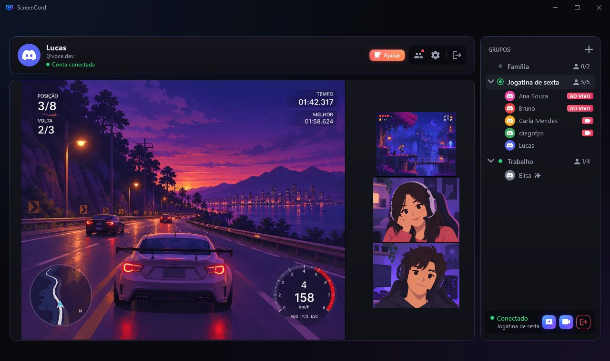
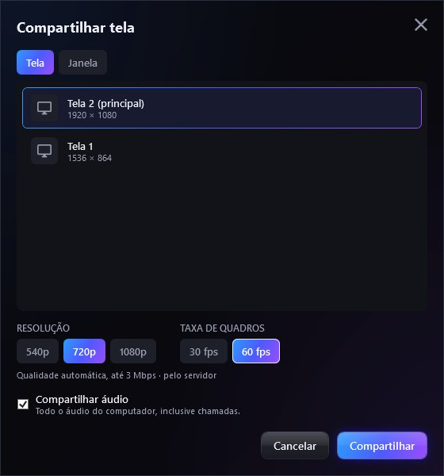
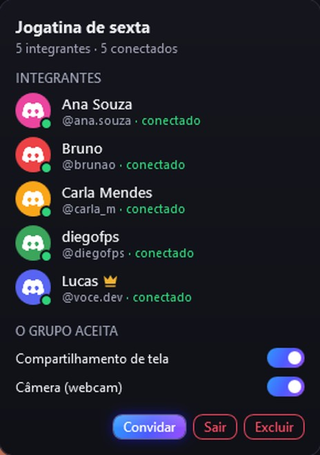
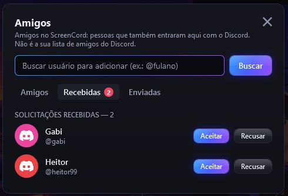
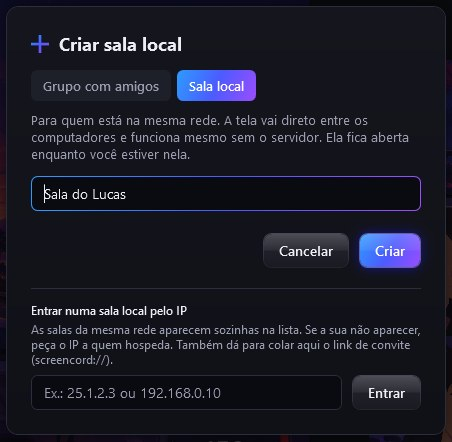
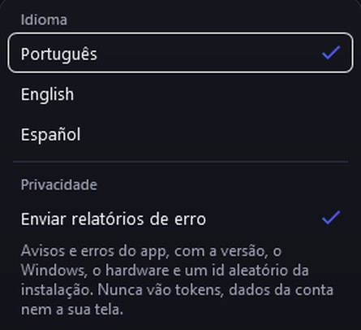

Como funciona
Entre
Com o Discord (a senha não passa pelo app) ou sem conta, só com um nome.
Monte um grupo
Adicione os amigos pelo @ e crie a sala, ou crie uma sala local na sua rede.
Clique em AO VIVO
Quem está transmitindo ganha o selo ao lado do nome. Um clique e você assiste.
Até quatro telas numa grade só
O jogo de um amigo, a câmera de outro, a sua: tudo na mesma janela.
- Fixe uma transmissão como principal; as outras viram miniaturas
- Volume, mudo e tela cheia (F11) em cada uma
- A grade se ajusta ao tamanho da janela, sem mudar o tamanho dela

Tela, janela ou câmera
Escolha o que mostrar e a qualidade; o resto é com o app.
- Salas locais: até 1080p a 60 fps. Pela internet: 720p a 60 fps ou 1080p a 30 fps (o limite é do servidor)
- Som do computador junto, se quiser; a qualidade se ajusta à conexão
- Troque a tela ou a qualidade sem derrubar quem assiste
- A câmera tem botão próprio, com prévia: nada vai ao ar até você ativar

Grupos privados, amigos de verdade
Só entra quem foi adicionado. Os amigos são de quem também usa o ScreenCord, não a sua lista do Discord.
- Veja quem está conectado e quem está ao vivo, em tempo real
- Quem criou o grupo decide se a sala aceita tela, câmera ou os dois
- Busque pelo @ e mande uma solicitação


Salas locais: sem servidor, sem conta
Na mesma rede, a sala fica no seu computador e a tela vai direto para quem assiste, cifrada.
- Funciona em LAN, Hamachi, Radmin e Tailscale, até com a API fora do ar
- As salas da rede aparecem sozinhas; se não, entre pelo IP de quem hospeda
- Com Usar sem conta, basta um nome: nada de Discord

Em português, inglês e espanhol
A troca é na hora, pela engrenagem de Configurações.
- Relatórios de erro opcionais, sem tokens, nomes de janela ou dados da conta. Dá para desligar
- Atualiza sozinho ao abrir; se preferir, desligue ou pule uma versão

Perguntas rápidas
Meus amigos do Discord aparecem automaticamente?
Não. O Discord não deixa outros apps lerem a sua lista de amigos. Os amigos do ScreenCord são quem também entrou no app: mande o link desta página e adicione cada um pelo @.
Preciso de conta no Discord?
Só para os grupos pela internet. Em salas locais, escolha Usar sem conta na tela inicial e entre só com um nome.
O app vê a minha senha ou as minhas mensagens?
Não. O login acontece no site do Discord, e o app pede só a permissão de ler o seu nome e a sua foto.
O Windows disse "O Windows protegeu o computador". E agora?
O instalador ainda não tem assinatura digital. Clique em Mais informações → Executar assim mesmo. Ele instala só para o seu usuário, e o código é aberto. Para conferir o arquivo, compare o SHA-256 abaixo do botão de download e veja a análise no VirusTotal. O pedido de administrador, na primeira instalação, é só para liberar as salas locais no Firewall: se recusar, o app oferece o botão Liberar no firewall depois.
O app envia algum dado sobre mim?
Só relatórios de erro, para eu corrigir problemas: a mensagem e o estado do app na falha, sem tokens, nomes de janela ou dados da conta. Desligue em Configurações → Privacidade. Detalhes na página de privacidade.
Funciona em qual sistema?
Windows 10 (versão 2004 ou mais recente) ou Windows 11, 64 bits.
Bora assistir junto?
Baixe, entre com o Discord e chame os amigos.
Baixar para WindowsCurtiu? Apoie o ScreenCord
O app é gratuito. Um café no Ko-fi ajuda a manter o servidor no ar e as novidades saindo.
Versões
| Versão | Instalador | Data |
|---|
Versões arquivadas
Versões que não funcionam mais com o servidor ou que têm um defeito grave. Ficam aqui só para referência: instale a mais recente.
| Versão | Instalador | Data |
|---|